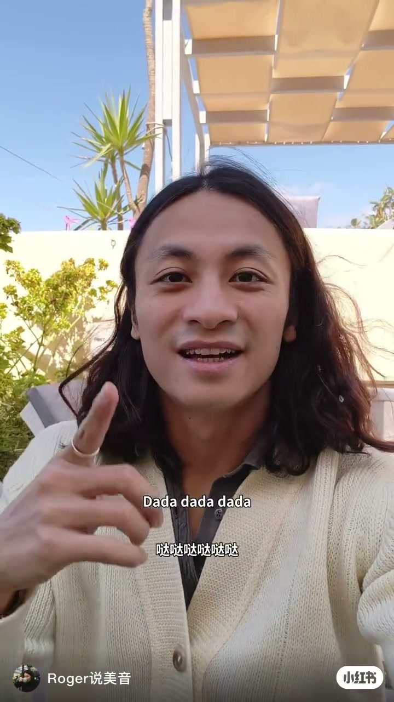
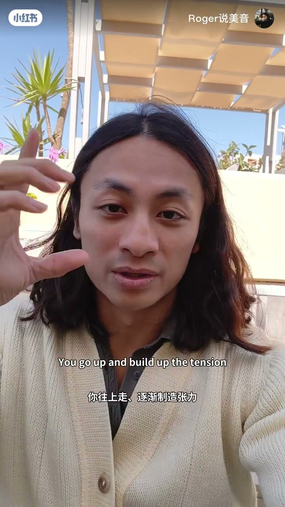
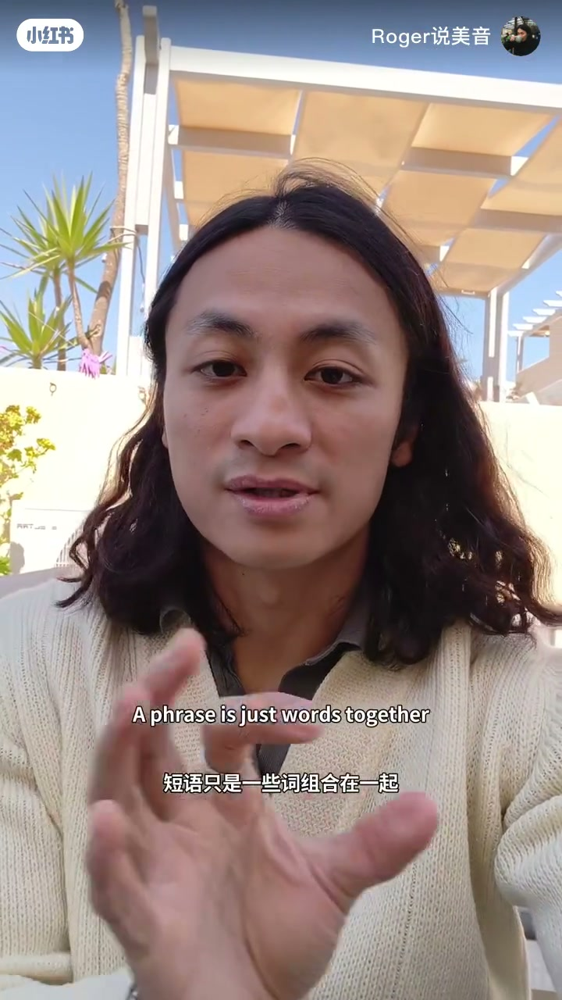
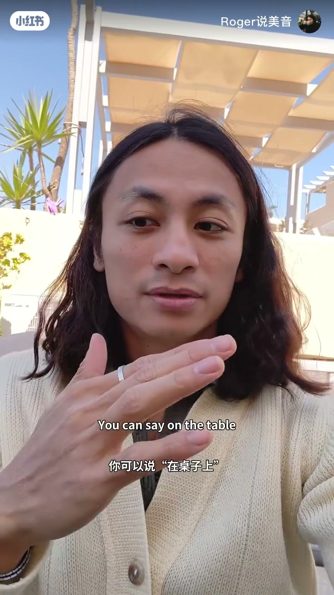

内容要点
整段只有他一个人出镜，账号角标是「Roger说美音」，画面上还打过水印 imrogerchow。Whisper 把英语口播听成繁体中文，而且把 rule 听成「法律」、把 clause 听成 Claus、把 meet 听成「一起吃」。下面的章节按硬字幕校正，转录区保留原分段。
知识结构
开场字幕是 Dada dada dada，中文写成「哒哒哒哒哒哒」。大约三秒切到 English is music，中文是「英语就是音乐」。他接着说大致的规则就是这样：往上走，逐渐制造张力，然后再往下走，把张力释放掉。
字幕把诀窍说成：要知道该在什么地方往上扬。基本上，说完一个短语或一个从句就可以上扬。短语被定义成一些词组合在一起；从句被定义成带有动词的短语。这是他的课堂口径，不是句法教材的完整定义。
介词短语的例子是 on the table，中文「在桌子上」，接着 Under the light「在灯下」，there is a book「有一本书」。从句链是 If you have time tomorrow「如果你明天有时间」，if I also have time「如果我也有时间」，we can meet like that「我们就可以那样见面」。转录里的「一起吃」对不上这句字幕。
他把这套用法接到口语上，说表达会更有音乐感，也更有逻辑，别人会更容易听懂。英文字幕写成 People will be understand，语法是错的，中文行没有跟着错。片尾转到「如果你喜欢这个技巧」，并请人留言；最后是 let's have a talk，「我们来好好聊聊吧」。
跟练时在短语或从句边界上扬，在信息结束处下落。笔记文案的「往上，往上，往下」是作者自己的概括。片尾那句 will be understand 不要当作正确英文来模仿。
00:00–00:14
先用哒哒打拍，再把上扬说成张力
他穿米白色坑条开衫，里面是深色衬衫，站在白凉棚和绿叶前面。右手食指往上指，字幕先不给单词，只给一串节奏：Dada dada dada，中文「哒哒哒哒哒哒」。这串没有词典意思，作用是把后面的句子拍子先念出来。

大约三秒，胸口叠着水印 imrogerchow，字幕换成 English is music，中文「英语就是音乐」。Whisper 把这句听成「英文就是音乐」（转录区是繁体字形），时间落在 00:00 到 00:04，比字幕稍早一点。
下一块字幕是 And the general rule is like this，中文「大致的规则是这样的」。转录写成「而法律就是这样」。这里的「法律」对不上画面，按字幕理解成规则。再下一句转录是「就像音乐一样」（转录区为繁体），抽到的帧上没有单独停住一句完全对应的 it's like music，所以不把这一拍写成另起的论点。

他接着用手势往下收。字幕是 and then you go down to release it，中文「然后再往下走释放张力」。转录是「你上去，建立紧张」和「然后你下去释放」（转录区为繁体），意思对得上。
「你往上走、逐渐制造张力。」字幕如此。转录原文转简后是「你上去，建立紧张」。
00:14–00:28
上扬的位置：短语说完，或从句说完
大约十八秒，字幕把前面的上扬收成一句方法：the real trick is to know where to go up，中文「真正的诀窍是要知道该在什么地方往上扬」。转录说「真正的方法就是知道上去的地方」，「方法」和字幕的「诀窍」不完全同词，位置是同一段。
下一句字幕一次说完规则：You can basically go up after you finish saying a phrase or a clause，中文「基本上你可以在说完一个短语或一个从句后往上扬」。转录把它拆成「你基本上可以上去」和「当你完成了一句话或一句词」。后半句的「一句词」在这里同时指短语和从句，要靠后面的定义才分得开。

紧接着字幕定义从句：and a clause is a phrase with a verb in it，中文「而从句是带有动词的短语」。转录的「而一句词就是一句词」「里面有一个词」（转录区为繁体）对不上这句，Claus 要到后面才出现。按画面，从句在他这节课里就是「带动词的短语」。他没有展开主语、时态或从句类型。
00:28–00:53
桌子、灯下，再接一条明天有空的从句
大约三十一秒，字幕点名结构：a prepositional phrase on the table，中文「介词短语『在桌子上』」。转录只听到「例如，在桌子上」，介词短语这四个字是字幕补上的。他马上给出口语说法：You can say on the table，中文「你可以说『在桌子上』」。手掌横在胸前，像是把这个短语切成一块。

下一镜字幕是 Under the light，中文「在灯下」。转录写成「在灯光下」（转录区为繁体），比字幕多了一个「光」字，正文以「在灯下」为准。再下一句是 there is a book，中文「有一本书」。转录是「有一个书」，量词被听错了。这三小块都是短语例，画面没有标出哪一拍必须上扬。
四十秒到四十二秒，转录没有新的非空分段。画面回到从句定义，字幕又出现 and a clause is a phrase with a verb，中文「而带有动词的短语就是从句」。语序和二十四秒那句对调了一下，内容仍是同一句课堂定义。转录在四十二秒写成「而Claus的词语是」（转录区为繁体），Claus 按字幕改回 clause。
从句链接着是 if I also have time，中文「如果我也有时间」，然后 we can meet like that，中文「我们就可以那样见面」。转录把最后一句听成「我们可以一起吃」（转录区为繁体）。画面上是见面，不是吃饭。明天有时间这一句，转录写成「如果明天有空」，「有空」和字幕「有时间」是近义替换，正文保留字幕的「有时间」。
00:53–01:09
音乐感和逻辑是他的听感判断，片尾还有一句错英文
大约五十六秒，字幕把练习接回说话方式：And if you apply this to how you speak English，中文「如果你把这一点运用到你的英语口语中」。转录是「如果你用这个方法去说英文」（转录区为繁体）。
下一句英文字幕是 People will be understand what you're saying better。will be understand 不合英语语法。中文行写成「人们会更容易听懂你在说什么」，意思是顺的，没有把这个语法错误译进去。转录转简后是「人们会理解你所说的」，少了「更容易」，也没有露出 be understand。这条结论是他的听感，片中没有对照录音或听众测试。
大约六十三秒，字幕转到 If you enjoy this tip，中文「如果你喜欢这个技巧」。六十五秒能读清的是 and leave a comment，中文「并且留下评论」。转录转简后是「请点赞，说，追踪，并留言」。「说」听起来像收藏或关注被切碎了，抽到的帧没有把点赞、收藏、关注三个按钮同时读清，所以不把这串互动写成完整清单。
片尾英文字幕转到想掌握美式英语，抽帧时中文行没有逐字读清，不把转录转简后的「如果你想学习英文」写成字幕原句。最后一帧字幕是 let's have a talk，中文「我们来好好聊聊吧」，胸口再次叠上 imrogerchow。拍摄地点、学员是谁，视频都没说。